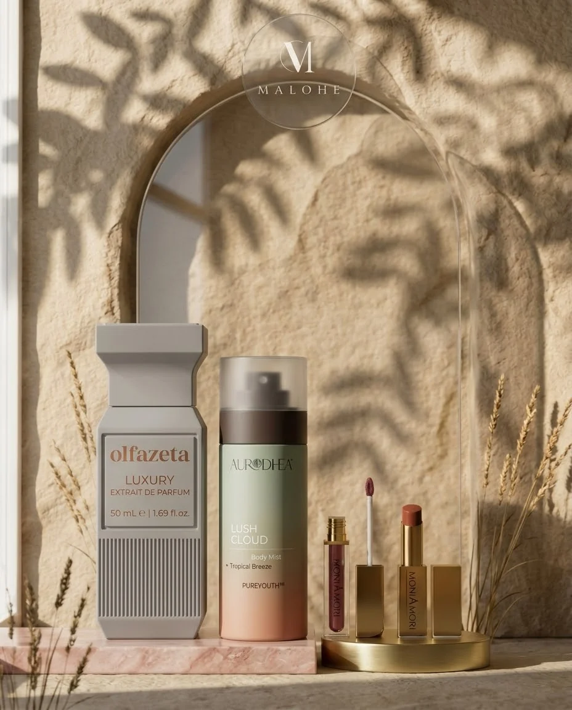
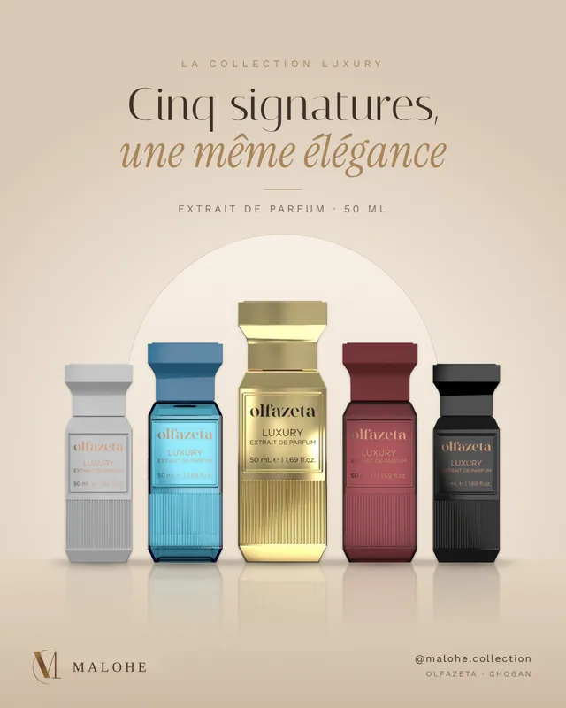
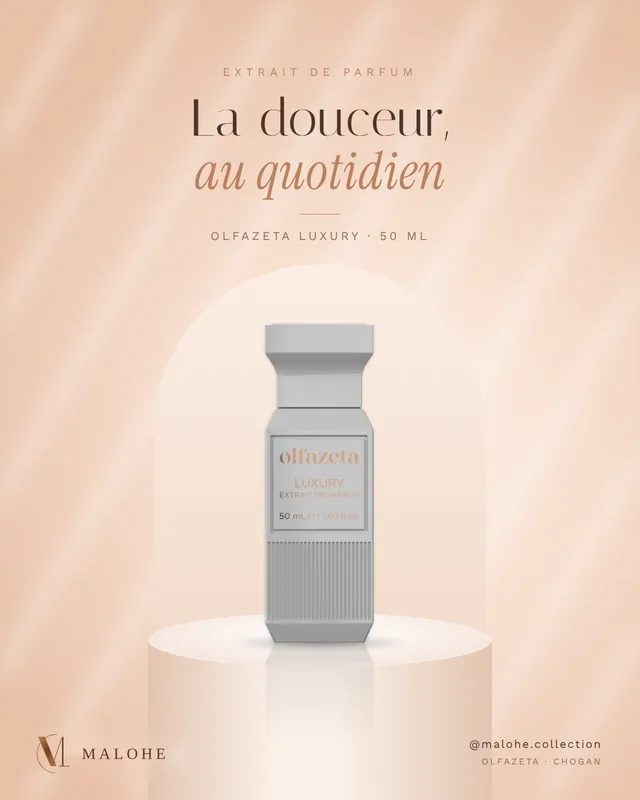
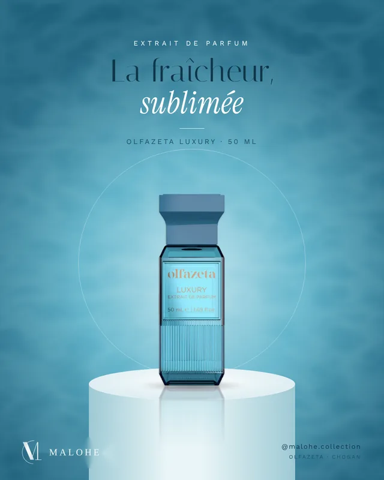
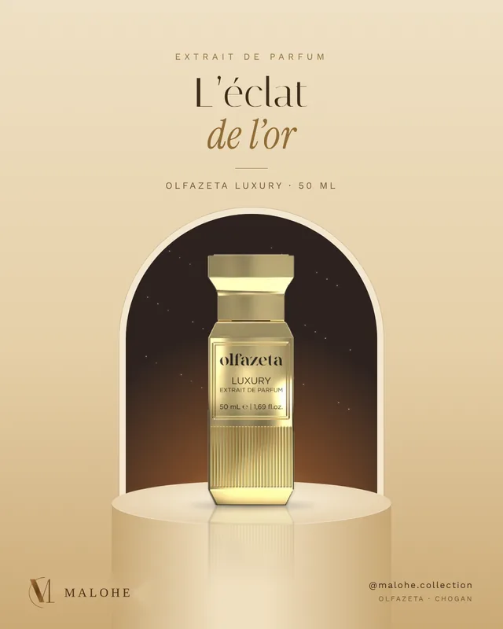
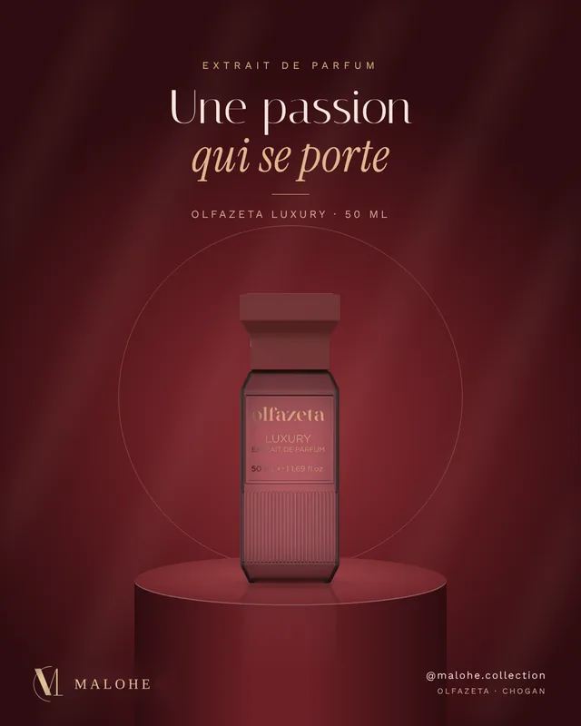
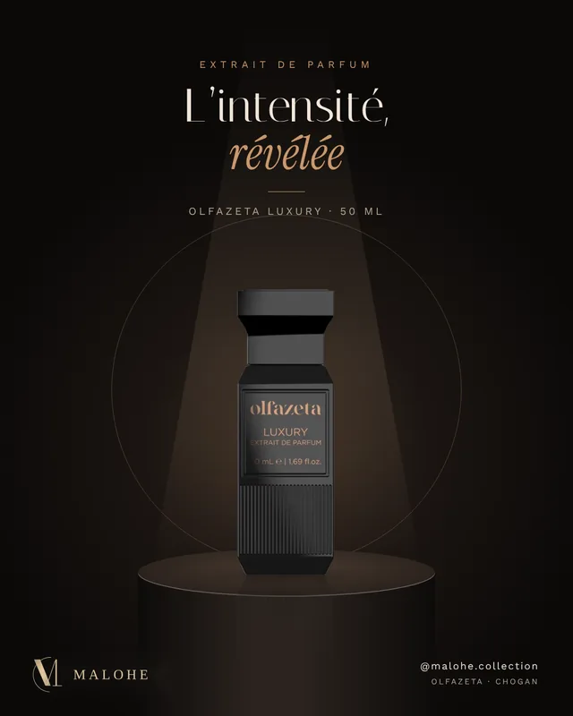

L’élégance au quotidien
Vendeur indépendant Chogan : parfums, brumes, maquillage, soins et parfums d’ambiance. Plus de 300 produits, choisis avec soin.

Se parfumer, parfumer sa maison.
Les parfums Olfazeta, les brumes pour le corps et les cheveux, et les parfums d’ambiance pour toute la maison.
Sublimer, puis soigner.
Le maquillage pour le visage, les lèvres et les yeux, et douze gammes de soins pour le visage, le corps et les cheveux.
Cinq signatures, une même élégance.
Les extraits de parfum Olfazeta Luxury, en flacon de 50 ml : douceur, fraîcheur, éclat, passion et intensité.






L’excellence du parfum, autrement.
Les parfums Olfazeta s’inspirent des grandes signatures olfactives de la parfumerie, pour proposer des fragrances raffinées à un prix accessible.
Des fragrances inspirées de grandes marques
Des parfums pensés pour rappeler l’univers des grandes maisons de parfumerie, avec leur propre caractère.
Une concentration de 30 %
Les parfums de cette gamme sont concentrés à 30 % d’essence de parfum, pour une intensité et une tenue pensées pour accompagner la journée.
Le luxe, sans le superflu
En privilégiant l’essentiel plutôt que les coûts de marketing des grandes marques, la marque rend l’univers du parfum plus accessible.
Parcourez notre liste d’inspirations
MALOHE — L’élégance au quotidien.
La collection Chogan.
Malohe est vendeur indépendant Chogan : retrouvez ici les parfums Olfazeta, les soins, le maquillage et les produits pour la maison de la marque.
Simple et sur mesure.
Choisissez
Parcourez le catalogue et ajoutez vos produits à « Ma sélection », en choisissant la contenance qui vous convient.
Envoyez
Copiez votre sélection et envoyez-la-moi par message ou par mail, avec le contact indiqué plus bas.
Une sélection pensée pour votre quotidien.
- Vendeur indépendant Chogan. Je vous accompagne dans le choix de vos produits Chogan, avec des conseils adaptés à vos envies.
- Qui sommes-nous. Malohe est une enseigne indépendante, spécialisée dans les produits Chogan. Nous ne sommes pas Chogan : nous sélectionnons, conseillons et livrons vos commandes.
- Une large sélection. Parfums pour elle, pour lui et mixtes, brumes, maquillage, soins et parfums d’ambiance.
- Un paiement simple. Par carte bancaire ou par virement.
Questions fréquentes.
Qui est derrière Malohe ?
Malohe est une enseigne indépendante, spécialisée dans les produits Chogan. Nous vous conseillons dans le choix de vos produits, nous préparons chaque commande avec soin et nous restons disponibles avant et après votre achat. Malohe est distincte de la société Chogan, dont elle distribue les produits en toute indépendance.
Comment commander ?
Ajoutez vos produits à « Ma sélection », copiez-la puis envoyez-la-moi par message, mail ou Instagram. Je confirme la commande et le total, puis vous réglez par carte bancaire ou par virement.
Qu’est-ce qu’une note en parfumerie ?
Un parfum est construit comme une pyramide olfactive : les notes de tête (premières minutes), les notes de cœur (le caractère du parfum) et les notes de fond (celles qui restent sur la peau). Chacune a sa durée et son intensité.
Quelle différence entre un extrait de parfum et une eau de parfum ?
Tout est dans la concentration en essence. D’après la marque, les parfums Chogan sont des extraits de parfum, concentrés à environ 30 % : plus intenses et plus tenaces. Une eau de parfum en contient 12 à 20 %, une eau de Cologne 5 à 10 %.
Pourquoi les prix sont-ils aussi accessibles ?
Selon Chogan, le budget est consacré à l’essentiel, c’est-à-dire à la formule et au flacon, plutôt qu’à la publicité. La marque adopte un design sobre et distribue ses produits uniquement en ligne, ce qui limite ses coûts. Cette organisation lui permet de proposer des prix très compétitifs.
Ces parfums sont-ils des copies ?
Non. Chaque fragrance Olfazeta est pensée comme une inspiration des grandes tendances de la parfumerie de luxe. Chaque composition repose sur une formule qui lui est propre et possède sa propre identité olfactive. Pour recevoir la liste détaillée de la collection, avec les notes et les familles olfactives de chaque parfum, contactez-moi. Vous pouvez aussi retrouver les parfums par leur nom et par leur numéro.
Le parfum me semble très fort au début, est-ce normal ?
Oui. Les extraits de parfum ont des notes de tête très présentes. Laissez le parfum évoluer 10 à 15 minutes pour en apprécier toute la profondeur, et vaporisez avec parcimonie.
Comment choisir mon parfum ?
Dites-moi quelles senteurs vous aimez (floral, boisé, gourmand, frais…) et pour qui il est destiné : je vous guide. Vous pouvez aussi filtrer le catalogue par univers et par catégorie.